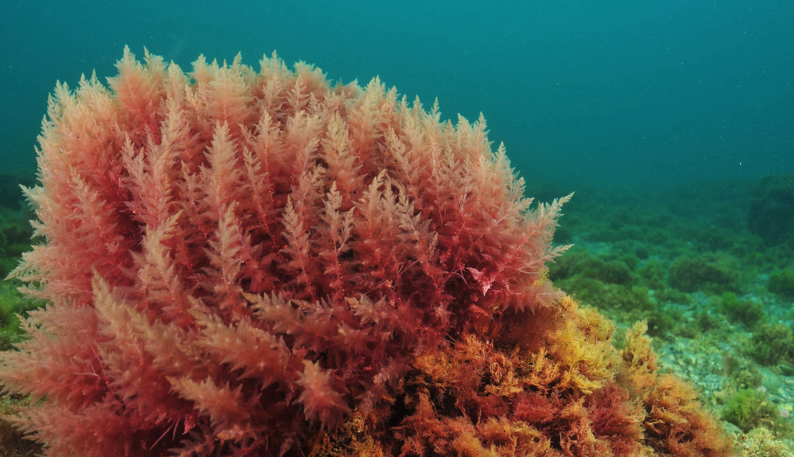
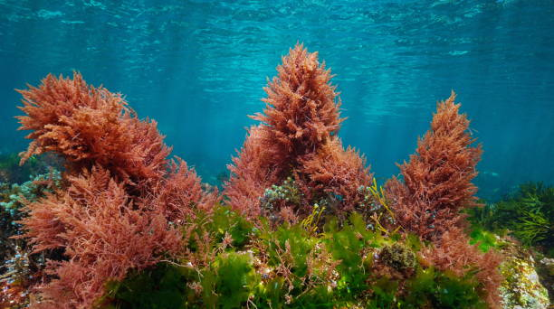
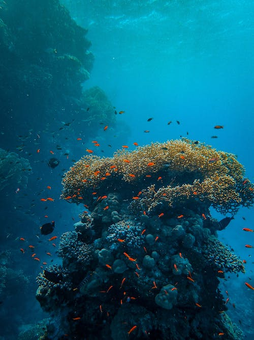
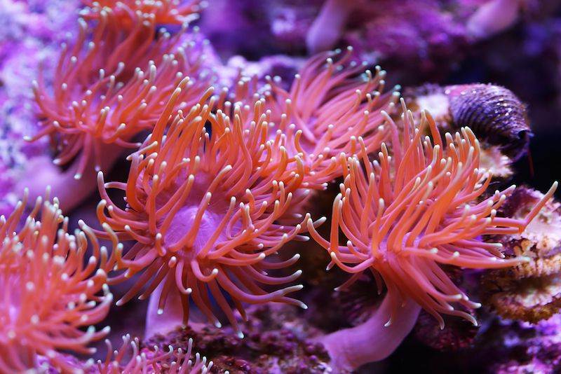
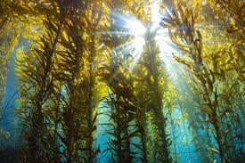
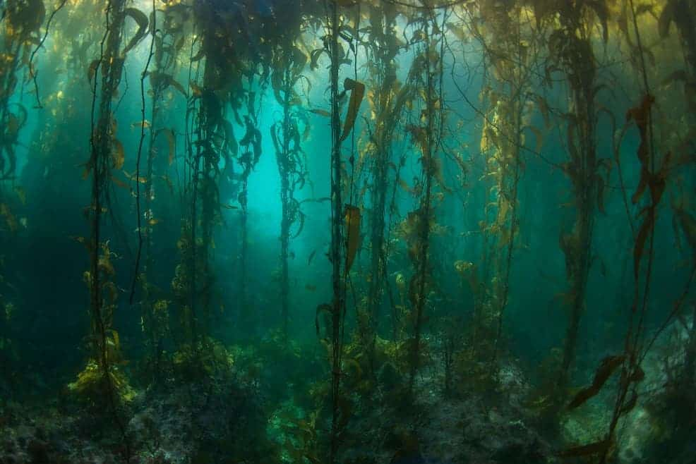
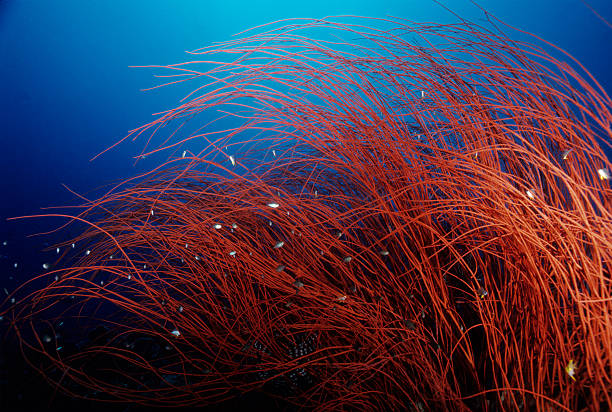
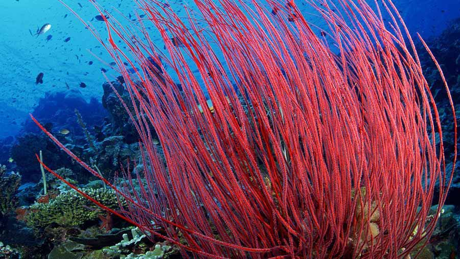

RED ALGAE
• Red algae is one of the oldest groups of eukaryotic algae.The Rhodophyta
comprises one of the largest phyla of algae, containing over 7,000
currently recognized species with taxonomic revisions ongoing.
• The majority of species (6,793) are found in the Florideophyceae (class),
and mostly consist of multicellular, marine algae, including many notable
seaweeds.Red algae are abundant in marine habitats but relatively rare in
freshwaters.Approximately 5% of red algae species occur in freshwater
environments, with greater concentrations found in warmer areas.
• The red algae form a distinct group characterized by having eukaryotic cells
without flagella and centrioles, chloroplasts that lack external endoplasmic
reticulum and contain unstacked (stroma) thylakoids, and use phycobiliproteins
as accessory pigments, which give them their red color.But despite their name,
red algae can vary greatly in color from bright green, soft pink, resembling
brown algae, to shades of red and purple, and may be almost black at greater
depths.


CORAL
• Corals are colonial marine invertebrates within the class Anthozoa of
the phylum Cnidaria. They typically form compact colonies of many identical
individual polyps. Coral species include the important reef builders that
inhabit tropical oceans and secrete calcium carbonate to form a hard skeleton.
• A coral "group" is a colony of very many genetically identical polyps. Each
polyp is a sac-like animal typically only a few millimeters in diameter and a
few centimeters in height.
• Corals are major contributors to the physical structure of the coral reefs that
develop in tropical and subtropical waters.

SEA ANEMONES
• Sea anemones are a group of predatory marine invertebrates constituting the order
Actiniaria. Because of their colourful appearance, they are named after the Anemone,
a terrestrial flowering plant.
• A typical sea anemone is a single polyp attached to a hard surface by its base, but
some species live in soft sediment, and a few float near the surface of the water.
The polyp has a columnar trunk topped by an oral disc with a ring of tentacles and
a central mouth. The tentacles can be retracted inside the body cavity or expanded
to catch passing prey.
• A sea anemone is capable of changing its shape dramatically. The column and tentacles
have longitudinal, transverse and diagonal sheets of muscle and can lengthen and
contract, as well as bend and twist. The gullet and mesenteries can evert, or the
oral disc and tentacles can retract inside the gullet, with the sphincter closing
the aperture; during this process, the gullet folds transversely and water is
discharged through the mouth.

KELP
• Kelps are large brown algae or seaweeds that make up the order Laminariales.
There are about 30 different genera. Kelp grows in "underwater forests" in
shallow oceans, and is thought to have appeared in the Miocene, 5 to 23
million years ago.The organisms require nutrient-rich water with temperatures
between 6 and 14 °C.
• In most kelp, the thallus consists of flat or leaf-like structures known as
blades. Blades originate from elongated stem-like structures, the stipes. The
holdfast, a root-like structure, anchors the kelp to the substrate of the ocean.
Gas-filled bladders form at the base of blades of American species, such as
Nereocystis lueteana, to hold the kelp blades close to the surface.
• Kelp may develop dense forests with high production, biodiversity and ecological
function. Along the Norwegian coast these forests cover 5800 km2, and they
support large numbers of animals. Numerous sessile animals are found on kelp
stipes and mobile invertebrate fauna are found in high densities on epiphytic algae
on the kelp stipes and on kelp holdfasts.


RED SEA WHIP
• The pink strands of this single deep-sea coral harbor a variety of marine life.
Sea whips are gorgonian corals and have flexible skeletons.
• Red Sea whip, any of several genera of corals of the order Gorgonacea, characterized
by a long, whiplike growth and a variety of bright colours. The “whip” consists of
a colony of tiny polyps that grow upon one another in a continuous single stem.
Spicules, or needlelike structures, of lime embedded in the polyp body provide a
firm but flexible support.
• Red Sea Whip is found growing on rocks at depths down to 20 metres along the
western fringes of the Atlantic Ocean, commonly found on the coastal shelfs of
Southern states and on rock and limestone edges.
• It has an upright growth habit with vertical, whip-like stems, sparsely
branching near the base. These are uniform in colour, ranging from white,
yellow, and orange to shades of red and mauve. The polyps are arranged in
several rows along both sides of each branch while the rows on older main
branches have distinct grooves between them, and when the polyps are retracted
the calyces do not stick out

